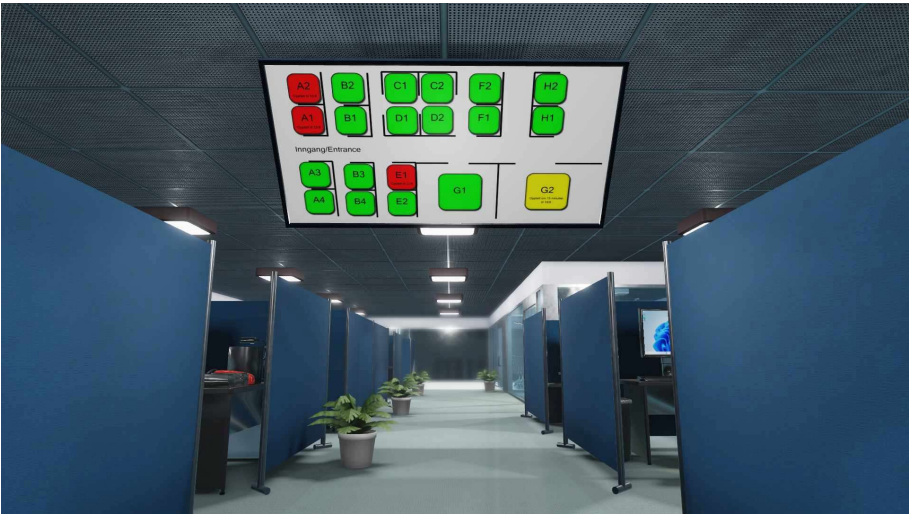

SeatSync. Er du lei av å bruke bortkastet Ɵd på å lete etter en plass når du skal studere eller jobbe? Eller kanskje noen stjeler favorittplassen din? Frykt ikke! For nå kan DU reservere hvilken som helst plass for arbeidet ditt! SeatSync, som både er appbasert og nettbasert, kan brukes for å reservere alt fra kontorplasser til plasser på biblioteket. Samtidig har vi infoskjermer utenfor hvert rom som viser hvilke plasser som er tatt og ikke – og hvor lenge de er opptatt!
Ideen.
Vi visste lenge at en app/nettverksbasert løsning var svaret, men for å gjøre det mer
nytenkende så tok vi inspirasjon fra kinobransjen. Når du skal på kino får du en enkel
bookingløsning der alle plasser på en dato enten er grønn for ledig, og rød for opptatt. Dette
enkle konseptet videreutvikler vi for å benytte i det moderne kontorlandskap og liknende.
Ikke bare kan du se at plasser er opptatt, men du får vite hvor lenge de er opptatt, og ved å
gjennomføre et søk kan du finne ut
nøyaktig når en plass vil være ledig i
fremtiden. I det du går gjennom
døra til kontoret ditt, vil du møtes
av en av våre skjermer. Skjermen
inneholder den samme
informasjonen som appen. Hvilke
plasser er ledig, og hvor lenge.
Hentet fra gruppeoppgaven til Daniel Dalen
Vil du se sean´s nettside? trykk under:)